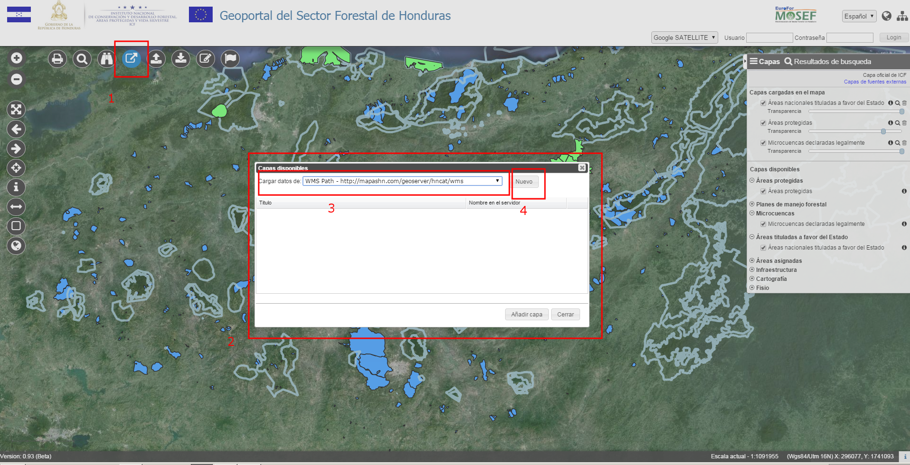
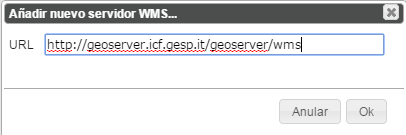
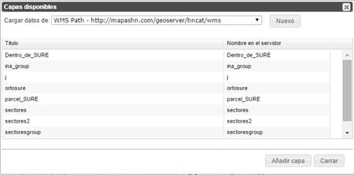

Permite conectarse a servicios externos de tipo WMS y añadir las capas incluidas.

Para añadir una nueva capa WMS:

Añadir un nuevo servidor WMS
Los servicios añadidos así solo están disponibles temporáneamente para la sesión.
Una vez elegido el servicio, una ventana permite visualizar las capas disponibles, seleccionarlas y añadirlas al mapa.
Las capas añadidas desde servicios externos están visualizadas en el Panel de las capas con un color diferente (azul).

Anadir WMS – Capas disponibles